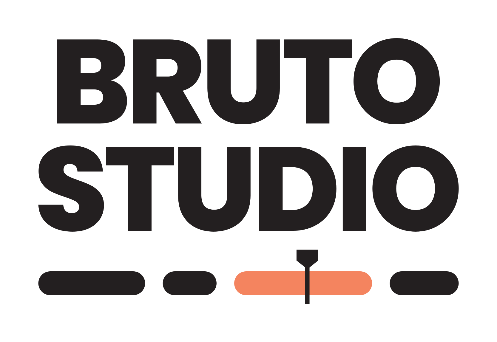
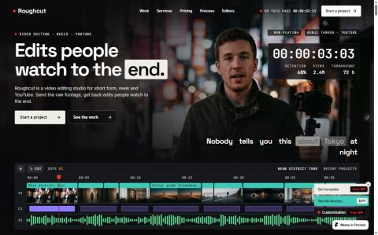
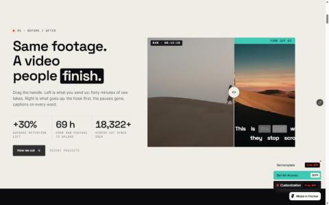
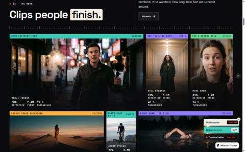
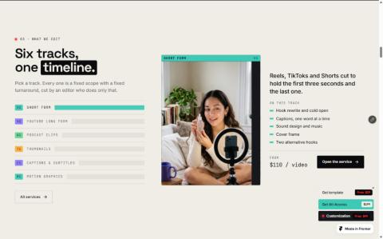
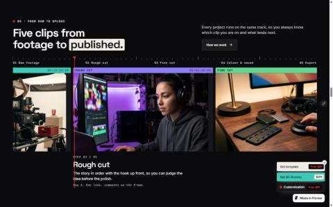
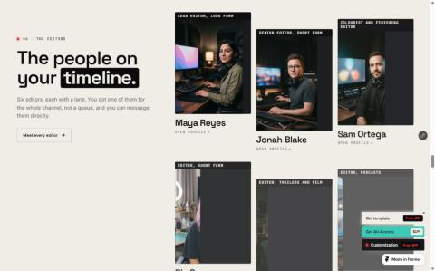
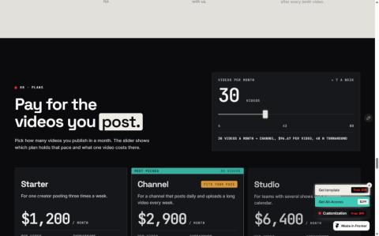

<meta charset="utf-8">
<title>Página de venta Bruto</title>
<meta name="claude:viewport-fit-sides" content="cover">
<link rel="preconnect" href="https://fonts.googleapis.com">
<link rel="preconnect" href="https://fonts.gstatic.com" crossorigin>
<link rel="stylesheet" href="https://fonts.googleapis.com/css2?family=Poppins:wght@400;500;800&family=JetBrains+Mono:wght@400;700&display=swap">
<style>
/* Layout: un documento de trabajo con la marca de Bruto Studio: crema, tinta y un naranja.
   Cada sección propuesta es una fila: la referencia a la izquierda, qué tomamos a la derecha. */
:root {
  --crema: #F2EFEA;
  --tinta: #231F20;
  --naranja: #F4845F;
  --papel: #FFFFFF;
  --clip: #6B6662;
  --grafito: #4E4A47;
  --f-display: "Poppins", "Arial Black", sans-serif;
  --f-body: "Poppins", "Segoe UI", system-ui, sans-serif;
  --f-mono: "JetBrains Mono", ui-monospace, Consolas, monospace;
  color-scheme: light;
}
* { box-sizing: border-box; }
body { background: var(--crema); color: var(--tinta); font-family: var(--f-body); font-size: 16px; line-height: 1.6; }
img { max-width: 100%; display: block; }
a { color: inherit; text-decoration-color: var(--naranja); text-decoration-thickness: 2px; text-underline-offset: 3px; }
.wrap { max-width: 1080px; margin: 0 auto; padding-left: max(16px, env(safe-area-inset-left, 0px)); padding-right: max(16px, env(safe-area-inset-right, 0px)); }
.label { font-family: var(--f-mono); font-size: 12px; font-weight: 700; text-transform: uppercase; letter-spacing: 0.06em; }
.display { font-family: var(--f-display); font-weight: 800; text-transform: uppercase; line-height: 0.95; letter-spacing: -0.035em; text-wrap: balance; margin: 0; }
mark { background: var(--naranja); color: var(--tinta); padding: 0 .12em; }
.tira { display: flex; gap: 5px; height: 10px; }
.tira span { border-radius: 99px; background: var(--tinta); }
.tira span.n { background: var(--naranja); }

header.top { padding-block: 40px 32px; border-bottom: 2px solid var(--tinta); }
header.top .wrap { display: grid; gap: 18px; }
header.top img.logo { width: 150px; }
header.top h1 { font-size: clamp(36px, 6vw, 64px); }
header.top p { max-width: 62ch; margin: 0; font-size: 18px; }

section { padding-block: 56px; border-bottom: 2px solid var(--tinta); }
section h2 { font-size: clamp(28px, 4vw, 44px); margin-bottom: 16px; }
section > .wrap > p { max-width: 66ch; }
.oscura { background: var(--tinta); color: var(--crema); }

.tesis { display: grid; grid-template-columns: repeat(3, minmax(0, 1fr)); gap: 16px; margin-top: 24px; }
.tesis div { background: var(--papel); border: 2px solid var(--tinta); padding: 18px; min-width: 0; }
.tesis div p { margin: 8px 0 0; font-size: 15px; }
.tesis strong { font-size: 18px; font-weight: 500; display: block; margin-top: 6px; }

/* Boceto del inicio */
.boceto { border: 2px solid var(--tinta); background: var(--crema); color: var(--tinta); overflow: hidden; margin-top: 24px; }
.boceto .nav { display: flex; align-items: center; justify-content: space-between; gap: 12px; padding: 14px 20px; border-bottom: 1px solid rgba(35,31,32,.15); }
.boceto .nav img { width: 72px; }
.boceto .nav .links { display: flex; gap: 18px; font-size: 13px; }
.boceto .nav .wa { background: var(--tinta); color: var(--crema); font-size: 13px; font-weight: 500; padding: 8px 14px; border-radius: 99px; white-space: nowrap; }
.boceto .hero { display: grid; grid-template-columns: minmax(0, 1.15fr) minmax(0, 1fr); gap: 28px; padding: 36px 24px 24px; align-items: center; }
.boceto .hero h3 { font-size: clamp(34px, 5.4vw, 62px); }
.boceto .hero p { margin: 16px 0 0; max-width: 40ch; color: var(--grafito); }
.boceto .ctas { display: flex; flex-wrap: wrap; gap: 10px; margin-top: 22px; align-items: center; }
.boceto .cta1 { background: var(--naranja); color: var(--tinta); font-weight: 500; padding: 12px 18px; border-radius: 99px; border: 2px solid var(--tinta); }
.boceto .cta2 { font-weight: 500; padding: 12px 6px; text-decoration: underline; text-decoration-color: var(--naranja); text-decoration-thickness: 2px; text-underline-offset: 4px; }
.boceto .nota { margin-top: 12px; font-size: 13px; color: var(--grafito); }
.reels { display: grid; grid-template-columns: repeat(3, minmax(0, 1fr)); gap: 10px; align-items: end; }
.reel { aspect-ratio: 9 / 16; border-radius: 12px; background: repeating-linear-gradient(135deg, #2b2728 0 12px, #332f30 12px 24px); position: relative; overflow: hidden; color: var(--crema); }
.reel:nth-child(2) { transform: translateY(-18px); }
.reel .met { position: absolute; left: 8px; right: 8px; bottom: 8px; font-family: var(--f-mono); font-size: 11px; font-weight: 700; display: flex; justify-content: space-between; }
.reel .tag { position: absolute; top: 8px; left: 8px; background: var(--crema); color: var(--tinta); font-family: var(--f-mono); font-size: 10px; font-weight: 700; padding: 2px 6px; border-radius: 4px; }
.linea { padding: 12px 24px 22px; display: grid; gap: 8px; }
.linea .meta { display: flex; justify-content: space-between; gap: 8px; flex-wrap: wrap; font-family: var(--f-mono); font-size: 11px; font-weight: 700; color: var(--grafito); }
.linea .pista { position: relative; height: 22px; display: flex; gap: 4px; }
.linea .pista span { border-radius: 6px; background: var(--tinta); color: var(--crema); font-family: var(--f-mono); font-size: 10px; font-weight: 700; padding: 4px 8px; white-space: nowrap; overflow: hidden; }
.linea .pista span.n { background: var(--naranja); color: var(--tinta); }
.linea .cab { position: absolute; top: -8px; bottom: -8px; width: 2px; background: var(--tinta); left: 0; animation: cab 6s cubic-bezier(.45,0,.2,1) infinite alternate; }
.linea .cab::before { content: ""; position: absolute; top: -2px; left: -5px; width: 12px; height: 10px; background: var(--tinta); clip-path: polygon(0 0, 100% 0, 100% 55%, 50% 100%, 0 55%); }
@keyframes cab { from { left: 2%; } to { left: 62%; } }
@media (prefers-reduced-motion: reduce) { .linea .cab { animation: none; left: 62%; } }
.boceto .prueba { display: flex; flex-wrap: wrap; gap: 8px 28px; padding: 14px 24px; border-top: 1px solid rgba(35,31,32,.15); font-size: 14px; }
.boceto .prueba b { font-family: var(--f-mono); font-size: 18px; margin-right: 6px; }
@media (max-width: 720px) {
  .boceto .hero { grid-template-columns: 1fr; }
  .boceto .nav .links { display: none; }
  .tesis { grid-template-columns: 1fr; }
}

/* Secciones propuestas */
.fila { display: grid; grid-template-columns: 56px minmax(0, 1fr) minmax(0, 1.1fr); gap: 24px; padding-block: 28px; border-top: 1px solid rgba(35,31,32,.2); align-items: start; }
.fila:first-of-type { border-top: 0; }
.fila .n { font-family: var(--f-display); font-weight: 800; font-size: 40px; line-height: 1; letter-spacing: -0.04em; }
.fila figure { margin: 0; }
.fila figure img { border: 2px solid var(--tinta); border-radius: 6px; }
.fila figcaption { margin-top: 6px; font-size: 13px; color: var(--grafito); }
.fila h3 { font-family: var(--f-display); font-weight: 800; font-size: 22px; text-transform: uppercase; letter-spacing: -0.02em; margin: 0 0 6px; line-height: 1.05; }
.fila p { margin: 0 0 10px; }
.fila ul { margin: 0; padding-left: 18px; }
.fila li { margin-bottom: 6px; }
.porque { display: inline-block; margin-top: 6px; font-size: 14px; background: var(--papel); border-left: 4px solid var(--naranja); padding: 6px 10px; }
.sinref { border: 2px dashed var(--tinta); border-radius: 6px; padding: 18px; font-size: 14px; color: var(--grafito); min-height: 120px; display: grid; place-items: center; text-align: center; }
@media (max-width: 760px) { .fila { grid-template-columns: 1fr; gap: 12px; } }

/* Falta */
.falta { display: grid; gap: 12px; margin-top: 20px; }
.falta div { display: grid; grid-template-columns: auto minmax(0, 1fr); gap: 14px; align-items: start; background: var(--papel); border: 2px solid var(--tinta); padding: 14px 16px; color: var(--tinta); }
.estado { font-family: var(--f-mono); font-size: 11px; font-weight: 700; text-transform: uppercase; padding: 3px 8px; border: 2px solid var(--tinta); white-space: nowrap; }
.estado.clave { background: var(--naranja); }
.falta p { margin: 4px 0 0; font-size: 15px; }

.fuentes { font-size: 14px; }
.fuentes li { margin-bottom: 4px; }
</style>

<header class="top">
  <div class="wrap">
    
    <p class="label">[ Propuesta · página para clientes · 23 nov 2026 ]</p>
    <h1 class="display">Una página que <mark>muestra</mark> el trabajo</h1>
    <p>Cómo pasar la página de venta al estilo del manual de marca y qué cambiar para que más gente que llega desde las redes nos escriba por WhatsApp.</p>
  </div>
</header>

<section>
  <div class="wrap">
    <p class="label">La idea en tres puntos</p>
    <h2 class="display">La página como una línea de tiempo</h2>
    <p>La mejor referencia que encontramos es Roughcut, una plantilla para estudios de edición. Arma toda la página con elementos del editor: línea de tiempo, pistas, timecode, clips con su nombre. Es lo mismo que ya dice nuestro logo, así que la página puede usar ese idioma sin forzarlo. A eso le sumamos lo que ya sabíamos que convierte en agencias de video (Vidchops, ShortVids, Video Husky).</p>
    <div class="tesis">
      <div><span class="label">01 · Mostrar</span><strong>El trabajo antes que las palabras</strong><p>Quien llega desde TikTok quiere ver videos. Los videos van arriba, en vertical, con sus números al lado.</p></div>
      <div><span class="label">02 · Probar</span><strong>Números concretos y caras reales</strong><p>“+30 % de retención” convence más que “videos de calidad”. Y tres editores con nombre dan más confianza que una marca sola.</p></div>
      <div><span class="label">03 · Un solo paso</span><strong>WhatsApp siempre a mano</strong><p>Un botón principal, el mismo en toda la página: escribirnos. El video de prueba gratis baja el riesgo.</p></div>
    </div>

    <h3 class="label" style="margin-top:40px">Boceto del inicio, con la marca</h3>
    <div class="boceto" aria-label="Boceto del inicio de la página">
      <div class="nav"><div class="links"><span>Trabajos</span><span>Cómo trabajamos</span><span>Packs</span><span>Preguntas</span></div><span class="wa">Escribinos</span></div>
      <div class="hero">
        <div>
          <span class="label">Edición de video corto · TikTok · Reels · Shorts</span>
          <h3 class="display" style="margin-top:12px">Vos grabás. Nosotros lo hacemos <mark>pegar.</mark></h3>
          <p>Mandanos el material en bruto y te devolvemos videos editados todos los días, con fecha de entrega y cambios hasta que quede bien.</p>
          <div class="ctas"><span class="cta1">Escribinos por WhatsApp</span><span class="cta2">Ver trabajos</span></div>
          <p class="nota">Primer video de prueba gratis · Desde USD 15 por video</p>
        </div>
        <div class="reels" aria-hidden="true">
          <div class="reel"><span class="tag">TIKTOK</span><span class="met"><span>1,2 M</span><span>68 %</span></span></div>
          <div class="reel"><span class="tag">REELS</span><span class="met"><span>480 K</span><span>71 %</span></span></div>
          <div class="reel"><span class="tag">SHORTS</span><span class="met"><span>220 K</span><span>64 %</span></span></div>
        </div>
      </div>
      <div class="linea" aria-hidden="true">
        <div class="meta"><span>EN ESTA PÁGINA · 00:00:12:08</span><span>CRUDO → EDITADO</span></div>
        <div class="pista"><span style="flex:18">crudo_01.mp4</span><span style="flex:10">corte</span><span class="n" style="flex:30">gancho · 0:00–0:03</span><span style="flex:14">subtítulos</span><span style="flex:16">música</span><i class="cab"></i></div>
      </div>
      <div class="prueba"><span><b>XX</b>videos editados</span><span><b>XX</b>cuentas activas</span><span><b>XX</b>visitas en TikTok</span></div>
    </div>
    <p style="font-size:14px;color:var(--grafito);margin-top:10px">Los números y las métricas de los videos son de ejemplo, para ver la forma. Van solo con datos reales (ver “Lo que falta para que convierta”).</p>
  </div>
</section>

<section>
  <div class="wrap">
    <p class="label">La página, sección por sección</p>
    <h2 class="display">Qué tomamos de cada referencia</h2>
    <p>En orden de arriba hacia abajo. Las capturas son de Roughcut; donde la idea viene de otro lado, lo aclaramos.</p>

    <div class="fila">
      <span class="n">01</span>
      <figure><figcaption>Roughcut: inicio con video, timecode y la línea de tiempo abajo.</figcaption></figure>
      <div>
        <h3>Inicio</h3>
        <p>Titular con una palabra resaltada en bloque naranja, como dice el manual. A la derecha, tres videos verticales con sus visitas. Abajo, la línea de tiempo de la marca: el cabezal recorre los clips del proceso (crudo, corte, gancho, subtítulos) y se detiene en el naranja.</p>
        <ul><li>Un solo botón principal: “Escribinos por WhatsApp”. El segundo, “Ver trabajos”, como link.</li><li>Debajo de los botones: “Primer video de prueba gratis · Desde USD 15 por video”.</li><li>Una franja con tres números reales.</li></ul>
        <span class="porque">Por qué convierte: el valor, la prueba y la acción entran en la primera pantalla.</span>
      </div>
    </div>

    <div class="fila">
      <span class="n">02</span>
      <figure><figcaption>Roughcut: comparador “mismo material, otro video”.</figcaption></figure>
      <div>
        <h3>Del bruto al editado</h3>
        <p>Un comparador que se arrastra: a la izquierda el crudo como nos llega, a la derecha el video terminado. Es la idea de la marca hecha interacción. Al lado, tres números: horas de material por video, retención, videos entregados.</p>
        <span class="porque">Por qué convierte: muestra el trabajo que el cliente no ve. Es el argumento más fuerte contra “lo edito yo con CapCut”.</span>
      </div>
    </div>

    <div class="fila">
      <span class="n">03</span>
      <figure><figcaption>Roughcut: cada video con formato, visitas, retención y tiempo de entrega.</figcaption></figure>
      <div>
        <h3>Trabajos</h3>
        <p>La grilla que ya tenemos, pero cada video con una etiqueta de formato (TikTok, Reels, Shorts) como el nombre de un clip, y sus números: visitas y en cuánto tiempo se entregó. Se abre en grande, como ahora.</p>
        <span class="porque">Por qué convierte: la prueba social va pegada al trabajo, no en una sección aparte que nadie lee.</span>
      </div>
    </div>

    <div class="fila">
      <span class="n">04</span>
      <figure><figcaption>Roughcut: cada servicio es una pista; al elegirla se ve qué incluye y desde cuánto.</figcaption></figure>
      <div>
        <h3>Servicios como pistas</h3>
        <p>Nuestros dos servicios (Multicuenta de TikTok y Videos para tus redes) como dos pistas. Al tocar una, se ve qué incluye, un video de ejemplo y el precio “desde”.</p>
        <span class="porque">Por qué convierte: cada uno se encuentra en su caso sin leer las dos descripciones.</span>
      </div>
    </div>

    <div class="fila">
      <span class="n">05</span>
      <figure><figcaption>Roughcut: el proceso como una línea de tiempo; el cabezal avanza con el scroll.</figcaption></figure>
      <div>
        <h3>Cómo trabajamos</h3>
        <p>Los cuatro pasos que ya tenemos (nos escribís, mandás el material, editamos con fecha, se publica) sobre una línea de tiempo. El cabezal avanza a medida que bajás. Cada paso dice cuánto tarda.</p>
        <span class="porque">Por qué convierte: responde “¿y esto cómo funciona?” antes de que lo pregunten por WhatsApp.</span>
      </div>
    </div>

    <div class="fila">
      <span class="n">06</span>
      <figure><figcaption>Roughcut: “las personas en tu línea de tiempo”.</figcaption></figure>
      <div>
        <h3>Quién edita</h3>
        <p>Los tres socios con foto, nombre y en qué se especializa cada uno. “Editor fijo” ya es parte del pack Constante: acá se ve la cara de esa persona.</p>
        <span class="porque">Por qué convierte: una agencia chica gana confianza mostrando quién hace el trabajo. Es lo que un freelancer de Fiverr no puede mostrar.</span>
      </div>
    </div>

    <div class="fila">
      <span class="n">07</span>
      <figure><figcaption>Roughcut: “¿cuántos videos publicás por mes?” y el plan que corresponde.</figcaption></figure>
      <div>
        <h3>Packs</h3>
        <p>Los tres packs con la animación nueva, más un selector arriba: “¿Cuántos videos querés por mes?”. Al moverlo se marca el pack que corresponde y el precio por video.</p>
        <ul><li>El pack destacado en tinta, con su clip naranja de “el más elegido”.</li><li>Cada pack termina en WhatsApp con el mensaje armado, como ahora.</li></ul>
        <span class="porque">Por qué convierte: el visitante elige con un número que conoce (sus videos por mes) y no comparando tablas.</span>
      </div>
    </div>

    <div class="fila">
      <span class="n">08</span>
      <div class="sinref">Vidchops y ShortVids (investigación anterior): garantía, objeciones como preguntas y WhatsApp como contacto principal.</div>
      <div>
        <h3>Preguntas y cierre</h3>
        <p>Las preguntas que ya tenemos, escritas como las objeciones reales (“¿Y si no me gusta el primer video?”). Al final, un cierre grande en fondo tinta: “Mandanos el bruto”, con el botón de WhatsApp y el video de prueba gratis.</p>
        <span class="porque">Por qué convierte: quien llegó al final está decidido; no hay que hacerle buscar el botón.</span>
      </div>
    </div>
  </div>
</section>

<section>
  <div class="wrap">
    <p class="label">El estilo</p>
    <h2 class="display">Cómo se aplica el manual</h2>
    <ul>
      <li><strong style="font-weight:500">Fondo crema, secciones en tinta</strong> para alternar ritmo: el comparador, los trabajos y el cierre van en oscuro, donde los videos se ven mejor.</li>
      <li><strong style="font-weight:500">Poppins ExtraBold</strong> en mayúsculas para títulos, con una palabra en bloque naranja. Poppins Regular para el texto. JetBrains Mono para etiquetas, timecodes y números.</li>
      <li><strong style="font-weight:500">La tira de clips</strong> como recurso: separadores, la línea de tiempo del inicio y del proceso, las etiquetas de cada video.</li>
      <li><strong style="font-weight:500">Bordes y sombras:</strong> la propuesta es suavizarlos. En esta página usamos líneas de 2 px y esquinas apenas redondeadas, que van mejor con el logo nuevo. Si se aprueba, se actualiza el manual.</li>
      <li><strong style="font-weight:500">Movimiento:</strong> solo el cabezal y las entradas de las secciones (como la de los packs). Los videos se reproducen al entrar en pantalla, como ahora.</li>
      <li><strong style="font-weight:500">Primero el celular:</strong> casi todos llegan desde TikTok e Instagram. La línea de tiempo se achica a una sola pista y el botón de WhatsApp queda fijo abajo.</li>
    </ul>
  </div>
</section>

<section class="oscura">
  <div class="wrap">
    <p class="label">Lo que falta para que convierta</p>
    <h2 class="display">El diseño solo no alcanza</h2>
    <p>La página tiene una regla: nada inventado. Hoy faltan los datos que más convencen, y sin ellos varias secciones no se muestran. Esto pesa más que cualquier cambio de estilo.</p>
    <div class="falta">
      <div><span class="estado clave">Clave</span><span><strong style="font-weight:500">Videos reales.</strong><p>Los seis de arriba son fotos de prueba. Hacen falta 6 a 8 videos nuestros en mp4 vertical, con el permiso del cliente si se lo nombra.</p></span></div>
      <div><span class="estado clave">Clave</span><span><strong style="font-weight:500">Un par crudo / editado.</strong><p>Un solo ejemplo alcanza para el comparador. Puede ser de Lean o del canal Bhikkhu, que es propio.</p></span></div>
      <div><span class="estado clave">Clave</span><span><strong style="font-weight:500">Tres números reales.</strong><p>Videos editados, cuentas activas, visitas. Salen de Bruto Studio y de TikTok.</p></span></div>
      <div><span class="estado">Importante</span><span><strong style="font-weight:500">Fotos de los tres socios.</strong><p>Con nombre y qué edita cada uno.</p></span></div>
      <div><span class="estado">Importante</span><span><strong style="font-weight:500">Un testimonio con nombre.</strong><p>Una frase de un cliente, con su cuenta.</p></span></div>
      <div><span class="estado">Importante</span><span><strong style="font-weight:500">El número de WhatsApp y los precios definitivos.</strong><p>Hoy el número es de prueba y los packs son una propuesta.</p></span></div>
    </div>
  </div>
</section>

<section>
  <div class="wrap">
    <p class="label">Fuentes</p>
    <ul class="fuentes">
      <li><a href="https://www.framer.com/marketplace/templates/short-form-editor/">Short Form Editor (Roughcut), plantilla de Framer</a>: la referencia principal de estilo. <a href="https://many-managers-534799.framer.app/">Vista previa</a>.</li>
      <li><a href="https://stodio.webflow.io/">Stodio</a>: la animación de los precios, que ya está en los packs.</li>
      <li><a href="https://www.digitalapplied.com/blog/landing-page-conversion-study-2000-pages-tested-2026">Estudio de 2.000 landings (2026)</a>: conversión media de 3,6 % en páginas de agencias; prueba concreta cerca del botón.</li>
      <li><a href="https://landerlab.io/blog/landing-page-best-practices">LanderLab, buenas prácticas 2026</a> y <a href="https://clutch.co/resources/landing-page-best-practices">Clutch</a>: un botón principal visible sin bajar, prueba social específica.</li>
      <li><a href="https://inbeat.agency/blog/top-short-form-video-agencies">inBeat</a> e <a href="https://influencermarketinghub.com/short-form-video-agencies/">Influencer Marketing Hub</a>: agencias de video corto de referencia.</li>
      <li>Investigación anterior en <span class="label" style="font-size:12px">docs/INVESTIGACION.md</span>: Video Husky, ShortVids, Vidchops, Lorak Films.</li>
    </ul>
  </div>
</section>
